Metric 13- Short Term Debt Ratio
April 8, 2022
Metric Construction
Definition & Interpretation
\[Short\: Term\: Debt\:Ratio = \frac{Current\: Liabilities}{Net \: Assets} \]
This metric indicates how well an organization can cover its immediate liabilities with its equity. Low values are better as they indicate that an organization has lower levels of leverage and more flexibility to dispense its assets as needed or as opportunities arise.
When an organization has a Short Term Debt Ratio of 1, its liabilities are fully equal to the assets it owns. If an organization has a ratio higher than 1, it indicates that it is over leveraged. A value close to zero indicates low levels of liability, and a negative value indicates that an organization has overpaid on their liabilities.
Variables
Note: This data is available only for organizations that file full 990s. [Organizations with revenues <$200,000 and total assets <$500,000 have the option to not file a full 990 and file an EZ instead.]
Numerator: Current Liabilities [Accounts Payable + Grants Payale]
- On 990: (Part X, Line 17B) + (Part X, Line 18B)
- SOI PC EXTRACTS: (accntspayableend+grntspayableend)
- SOI PC EXTRACTS: (accntspayableend+grntspayableend)
- On EZ: Not Available
- SOI PC EXTRACTS: Not Available
- SOI PC EXTRACTS: Not Available
- On 990: (Part X, Line 17B) + (Part X, Line 18B)
Denominator: Net Assets
On 990: (Part X, Line 33B) -SOI PC EXTRACTS: totnetassetend
On EZ: Part I, Line 21 -SOI PC EXTRACTS: networthend
# TEMPORARY VARIABLES
current_liabilities <- (core$accntspayableend+core$grntspayableend)
netassets <- ( core$totnetassetend)
# can't divide by zero
netassets[ netassets == 0 ] <- NA
# SAVE RESULTS
core$st_debt_ratio <- current_liabilities / netassets
# summary( core$st_debt_ratio )Standardize Scales
Check high and low values to see what makes sense.
x.05 <- quantile( core$st_debt_ratio, 0.05, na.rm=T )
x.95 <- quantile( core$st_debt_ratio, 0.95, na.rm=T )
ggplot( core, aes(x = st_debt_ratio ) ) +
geom_density( alpha = 0.5) +
xlim( x.05, x.95 ) 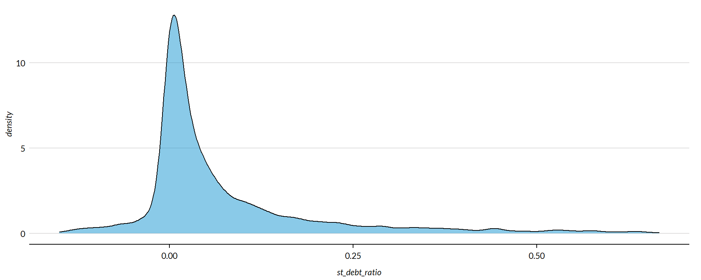
core2 <- core
# proportion of values that are negative
#mean( core2$st_debt_ratio < 0, na.rm=T )
#core2$st_debt_ratio[ core2$st_debt_ratio < 0 ] <- 0
# proption of values above 200%
#mean( core2$st_debt_ratio > 50, na.rm=T )
#core2$st_debt_ratio[ core2$st_debt_ratio > 50 ] <- 50
x.05 <- quantile( core$st_debt_ratio, 0.05, na.rm=T )
x.95 <- quantile( core$st_debt_ratio, 0.95, na.rm=T )
core2 <- core
# proportion of values that are negative
# mean( core2$der < 0, na.rm=T )
# proption of values above 1%
# mean( core2$der > 5, na.rm=T )
# WINSORIZATION AT 5th and 95th PERCENTILES
core2$st_debt_ratio[ core2$st_debt_ratio < x.05 ] <- x.05
core2$st_debt_ratio[ core2$st_debt_ratio > x.95 ] <- x.95Metric Scope
Tax data is available for full 990 filers, so this metric does not describe any organizations with Gross receipts < $200,000 and Total assets < $500,000. Some organizations with receipts or assets below those thresholds may have filed a full 990, but these would be exceptions.
The data have been capped to those with values between 5% and 95% of the normal distribution to cut off outliers and exempt organizations with zero profitability (though negative values are allowed still).
Reference
Any cited works here…
Descriptive Statistics
Note: All monetary variables have been converted to thousands of dollars.
core2 %>%
mutate( # st_debt_ratio = st_debt_ratio * 10000,
totrevenue = totrevenue / 1000,
totfuncexpns = totfuncexpns / 1000,
lndbldgsequipend = lndbldgsequipend / 1000,
totassetsend = totassetsend / 1000,
totliabend = totliabend / 1000,
totnetassetend = totnetassetend / 1000 ) %>%
select( STATE, NTEE1, NTMAJ12,
st_debt_ratio,
AGE,
totrevenue, totfuncexpns,
lndbldgsequipend, totassetsend,
totnetassetend, totliabend ) %>%
stargazer( type = s.type,
digits=2,
summary.stat = c("min","p25","median",
"mean","p75","max", "sd"),
covariate.labels = c("Short Term Debt Ratio", "Age",
"Revenue ($1k)", "Expenses($1k)",
"Buildings ($1k)", "Total Assets ($1k)",
"Net Assets ($1k)", "Liabiliies ($1k)"))| Statistic | Min | Pctl(25) | Median | Mean | Pctl(75) | Max | St. Dev. |
| Short Term Debt Ratio | -0.15 | 0.001 | 0.02 | 0.09 | 0.11 | 0.67 | 0.18 |
| Age | 3 | 22 | 30 | 32.04 | 41 | 95 | 14.75 |
| Revenue (1k) | -5,376.77 | 258.90 | 909.40 | 4,521.71 | 3,672.25 | 408,932.00 | 14,285.64 |
| Expenses(1k) | 0.00 | 263.50 | 840.06 | 4,192.08 | 3,327.50 | 382,666.50 | 13,465.77 |
| Buildings (1k) | -4.48 | 79.14 | 824.25 | 3,504.47 | 2,868.50 | 513,508.80 | 13,210.06 |
| Total Assets (1k) | -7,552.11 | 777.90 | 2,446.11 | 9,261.85 | 7,477.25 | 672,021.00 | 27,038.89 |
| Net Assets (1k) | -178,869.70 | 155.67 | 1,093.86 | 4,553.27 | 4,078.70 | 531,067.70 | 15,470.31 |
| Liabiliies (1k) | -2,707.10 | 115.44 | 815.58 | 4,708.51 | 3,133.16 | 705,623.10 | 18,721.86 |
What proportion of orgs have Short Term Debt Ratios equal to zero?
prop.zero <- mean( core2$st_debt_ratio == 0, na.rm=T )In the sample, 11 percent of the organizations have Short Term Debt Ratios equal to zero, meaning they have no current liabilities. These organizations are dropped from subsequent graphs to keep the visualizations clean. The interpretation of the graphics should be the distributions of Short Term Debt Ratios for organizations that have positive or negative values.
###
### ADD QUANTILES
###
### function create_quantiles() defined in r-functions.R
core2$exp.q <- create_quantiles( var=core2$totfuncexpns, n.groups=5 )
core2$rev.q <- create_quantiles( var=core2$totrevenue, n.groups=5 )
core2$asset.q <- create_quantiles( var=core2$totnetassetend, n.groups=5 )
core2$age.q <- create_quantiles( var=core2$AGE, n.groups=5 )
core2$land.q <- create_quantiles( var=core2$lndbldgsequipend, n.groups=5 )Short Term Debt Ratio Density
min.x <- min( core2$st_debt_ratio, na.rm=T )
max.x <- max( core2$st_debt_ratio, na.rm=T )
ggplot( core2, aes(x = st_debt_ratio )) +
geom_density( alpha = 0.5 ) +
xlim( min.x, max.x ) +
xlab( variable.label ) +
theme( axis.title.y=element_blank(),
axis.text.y=element_blank(),
axis.ticks.y=element_blank() )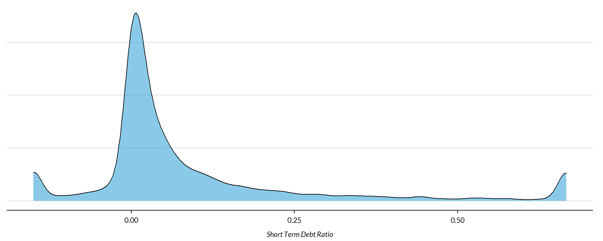
Short Term Debt Ratio by NTEE Major Code
core3 <- core2 %>% filter( ! is.na(NTEE1) )
table( core3$NTEE1) %>% sort(decreasing=TRUE) %>% kable()| Var1 | Freq |
|---|---|
| Housing | 2837 |
| Community Development | 1585 |
| Human Services | 1102 |
t <- table( factor(core3$NTEE1) )
df <- data.frame( x=Inf, y=Inf,
N=paste0( "N=", as.character(t) ),
NTEE1=names(t) )
ggplot( core3, aes( x=st_debt_ratio ) ) +
geom_density( alpha = 0.5) +
# xlim( -0.1, 1 ) +
labs( title="Nonprofit Subsectors" ) +
xlab( variable.label ) +
facet_wrap( ~ NTEE1, nrow=3 ) +
theme_minimal( base_size = 15 ) +
theme( axis.title.y=element_blank(),
axis.text.y=element_blank(),
axis.ticks.y=element_blank(),
strip.text = element_text( face="bold") ) + # size=20
geom_text( data=df,
aes(x, y, label=N ),
hjust=2, vjust=3,
color="gray60", size=6 )
Short Term Debt Ratio by Region
table( core2$Region) %>% kable()| Var1 | Freq |
|---|---|
| Midwest | 1444 |
| Northeast | 1368 |
| South | 1610 |
| West | 1088 |
t <- table( factor(core2$Region) )
df <- data.frame( x=Inf, y=Inf,
N=paste0( "N=", as.character(t) ),
Region=names(t) )
core2 %>%
filter( ! is.na(Region) ) %>%
ggplot( aes(st_debt_ratio) ) +
geom_density( alpha = 0.5 ) +
xlab( "Census Regions" ) +
ylab( variable.label ) +
facet_wrap( ~ Region, nrow=3 ) +
theme_minimal( base_size = 22 ) +
theme( axis.title.y=element_blank(),
axis.text.y=element_blank(),
axis.ticks.y=element_blank() ) +
geom_text( data=df,
aes(x, y, label=N ),
hjust=2, vjust=3,
color="gray60", size=6 )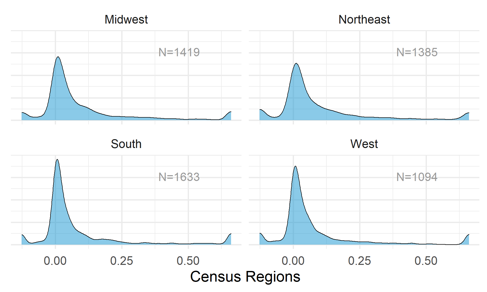
table( core2$Division ) %>% kable()| Var1 | Freq |
|---|---|
| East North Central | 1038 |
| East South Central | 289 |
| Middle Atlantic | 904 |
| Mountain | 303 |
| New England | 464 |
| Pacific | 785 |
| South Atlantic | 900 |
| West North Central | 406 |
| West South Central | 421 |
t <- table( factor(core2$Division) )
df <- data.frame( x=Inf, y=Inf,
N=paste0( "N=", as.character(t) ),
Division=names(t) )
core2 %>%
filter( ! is.na(Division) ) %>%
ggplot( aes(st_debt_ratio) ) +
geom_density( alpha = 0.5 ) +
xlab( "Census Sub-Regions (10)" ) +
ylab( variable.label ) +
facet_wrap( ~ Division, nrow=3 ) +
theme_minimal( base_size = 22 ) +
theme( axis.title.y=element_blank(),
axis.text.y=element_blank(),
axis.ticks.y=element_blank() ) +
geom_text( data=df,
aes(x, y, label=N ),
hjust=2, vjust=3,
color="gray60", size=6 ) 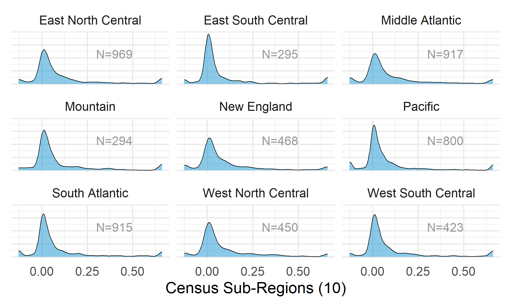
Short Term Debt Ratio by Nonprofit Size (Expenses)
ggplot( core2, aes(x = totfuncexpns )) +
geom_density( alpha = 0.5 ) +
xlim( quantile(core2$totfuncexpns, c(0.02,0.98), na.rm=T ) )
core2$totfuncexpns[ core2$totfuncexpns < 1 ] <- 1
# core2$totfuncexpns[ is.na(core2$totfuncexpns) ] <- 1
if( nrow(core2) > 10000 )
{
core3 <- sample_n( core2, 10000 )
} else
{
core3 <- core2
}
jplot( log10(core3$totfuncexpns), core3$st_debt_ratio,
xlab="Nonprofit Size (logged Expenses)",
ylab=variable.label,
xaxt="n", xlim=c(3,10) )
axis( side=1,
at=c(3,4,5,6,7,8,9,10),
labels=c("1k","10k","100k","1m","10m","100m","1b","10b") )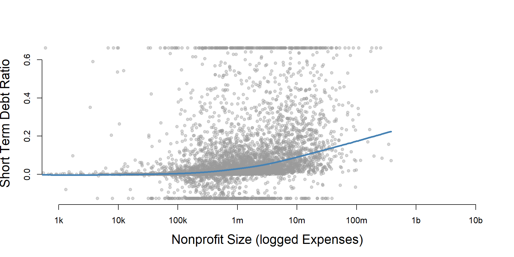
core2 %>%
filter( ! is.na(exp.q) ) %>%
ggplot( aes(st_debt_ratio) ) +
geom_density( alpha = 0.5) +
labs( title="Nonprofit Size (logged expenses)" ) +
xlab( variable.label ) +
facet_wrap( ~ exp.q, nrow=3 ) +
theme_minimal( base_size = 22 ) +
theme( axis.title.y=element_blank(),
axis.text.y=element_blank(),
axis.ticks.y=element_blank() )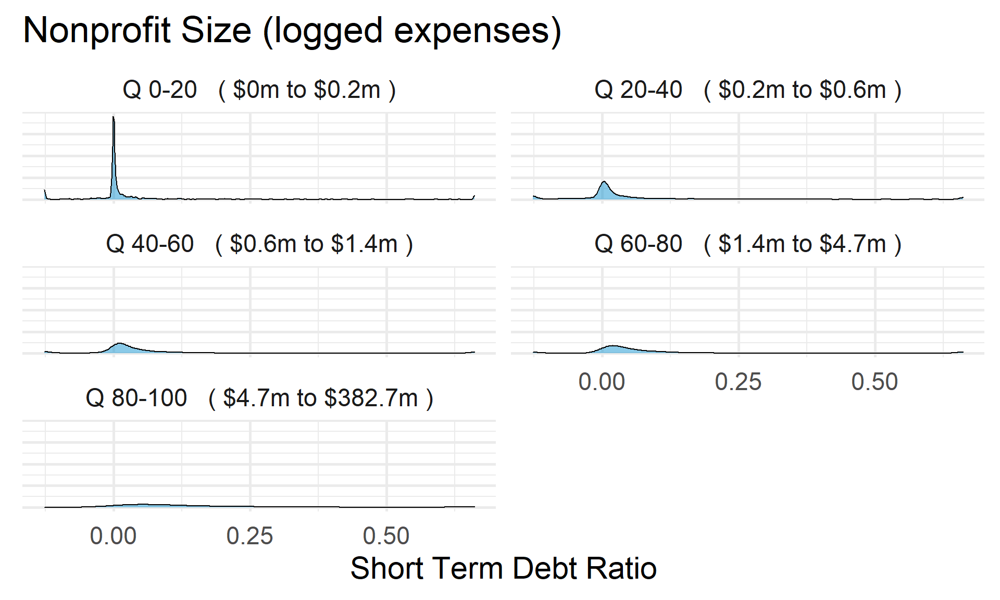
Short Term Debt Ratio by Nonprofit Size (Revenue)
ggplot( core2, aes(x = totrevenue )) +
geom_density( alpha = 0.5 ) +
xlim( quantile(core2$totrevenue, c(0.02,0.98), na.rm=T ) ) +
theme( axis.title.y=element_blank(),
axis.text.y=element_blank(),
axis.ticks.y=element_blank() )
core2$totrevenue[ core2$totrevenue < 1 ] <- 1
if( nrow(core2) > 10000 )
{
core3 <- sample_n( core2, 10000 )
} else
{
core3 <- core2
}
jplot( log10(core3$totrevenue), core3$st_debt_ratio,
xlab="Nonprofit Size (logged Revenue)",
ylab=variable.label,
xaxt="n", xlim=c(3,10) )
axis( side=1,
at=c(3,4,5,6,7,8,9,10),
labels=c("1k","10k","100k","1m","10m","100m","1b","10b") )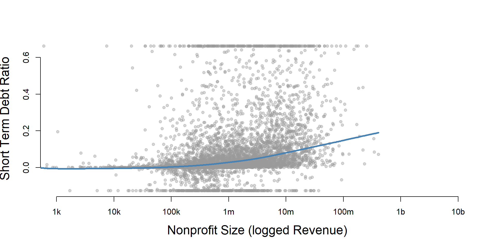
core2 %>%
filter( ! is.na(rev.q) ) %>%
ggplot( aes(st_debt_ratio) ) +
geom_density( alpha = 0.5 ) +
labs( title="Nonprofit Size (logged revenues)" ) +
xlab( variable.label ) +
facet_wrap( ~ rev.q, nrow=3 ) +
theme_minimal( base_size = 22 ) +
theme( axis.title.y=element_blank(),
axis.text.y=element_blank(),
axis.ticks.y=element_blank() )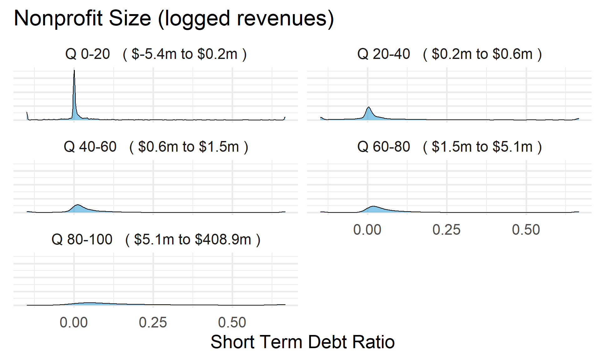
Short Term Debt Ratio by Nonprofit Size (Net Assets)
ggplot( core2, aes(x = totnetassetend )) +
geom_density( alpha = 0.5) +
xlim( quantile(core2$totnetassetend, c(0.02,0.98), na.rm=T ) ) +
xlab( "Net Assets" ) +
theme( axis.title.y=element_blank(),
axis.text.y=element_blank(),
axis.ticks.y=element_blank() )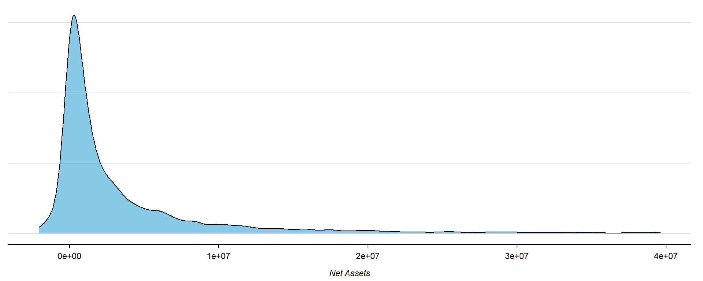
core2$totnetassetend[ core2$totnetassetend < 1 ] <- NA
if( nrow(core2) > 10000 )
{
core3 <- sample_n( core2, 10000 )
} else
{
core3 <- core2
}
jplot( log10(core3$totnetassetend), core3$st_debt_ratio,
xlab="Nonprofit Size (logged Net Assets)",
ylab=variable.label,
xaxt="n", xlim=c(3,10) )
axis( side=1,
at=c(3,4,5,6,7,8,9,10),
labels=c("1k","10k","100k","1m","10m","100m","1b","10b") )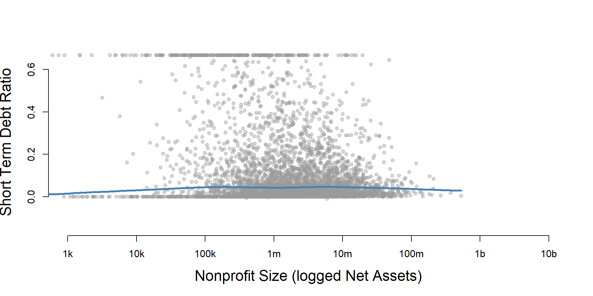
core2$totnetassetend[ core2$totnetassetend < 1 ] <- NA
core2$asset.q <- create_quantiles( var=core2$totnetassetend, n.groups=5 )
core2 %>%
filter( ! is.na(asset.q) ) %>%
ggplot( aes(st_debt_ratio) ) +
geom_density( alpha = 0.5 ) +
labs( title="Nonprofit Size (logged net assets, if assets > 0)" ) +
xlab( variable.label ) +
ylab( "" ) +
facet_wrap( ~ asset.q, nrow=3 ) +
theme_minimal( base_size = 22 ) +
theme( axis.title.y=element_blank(),
axis.text.y=element_blank(),
axis.ticks.y=element_blank() )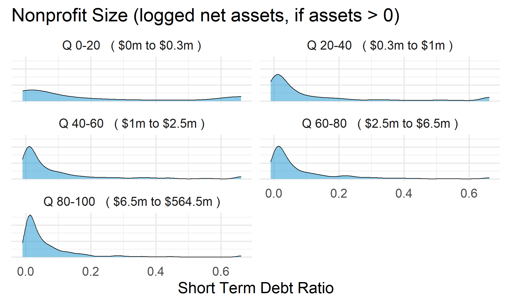
Total Assets for Comparison
core2$totassetsend[ core2$totassetsend < 1 ] <- NA
core2$tot.asset.q <- create_quantiles( var=core2$totassetsend, n.groups=5 )
if( nrow(core2) > 10000 )
{
core3 <- sample_n( core2, 10000 )
} else
{
core3 <- core2
}
jplot( log10(core3$totassetsend), core3$st_debt_ratio,
xlab="Nonprofit Size (logged Total Assets)",
ylab=variable.label,
xaxt="n", xlim=c(3,10) )
axis( side=1,
at=c(3,4,5,6,7,8,9,10),
labels=c("1k","10k","100k","1m","10m","100m","1b","10b") )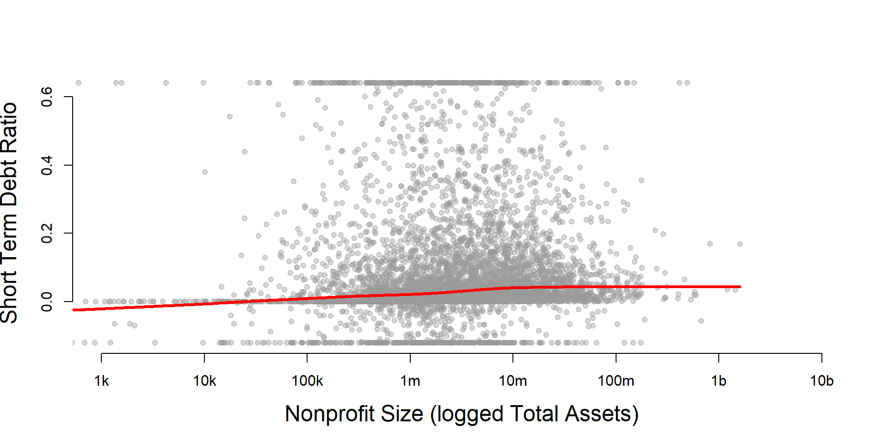
ggplot( core2, aes(x = totassetsend )) +
geom_density( alpha = 0.5) +
xlim( quantile(core2$totassetsend, c(0.02,0.98), na.rm=T ) ) +
xlab( "Net Assets" ) +
theme( axis.title.y=element_blank(),
axis.text.y=element_blank(),
axis.ticks.y=element_blank() )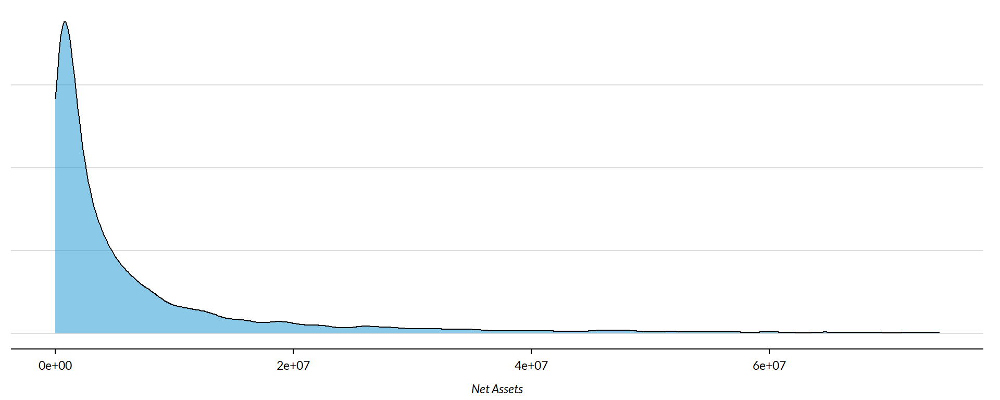
core2 %>%
filter( ! is.na(tot.asset.q) ) %>%
ggplot( aes(st_debt_ratio) ) +
geom_density( alpha = 0.5 ) +
xlab( "Nonprofit Size (logged total assets, if assets > 0)" ) +
ylab( variable.label ) +
facet_wrap( ~ tot.asset.q, nrow=3 ) +
theme_minimal( base_size = 22 ) +
theme( axis.title.y=element_blank(),
axis.text.y=element_blank(),
axis.ticks.y=element_blank() )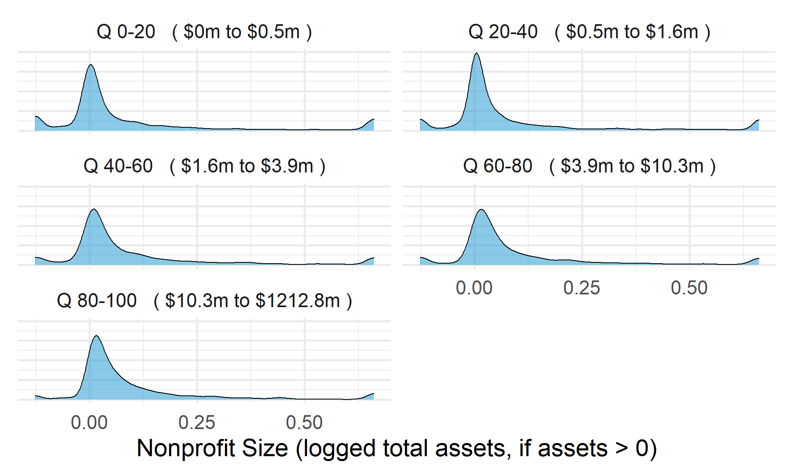
Short Term Debt Ratio by Nonprofit Age
ggplot( core2, aes(x = AGE )) +
geom_density( alpha = 0.5 ) 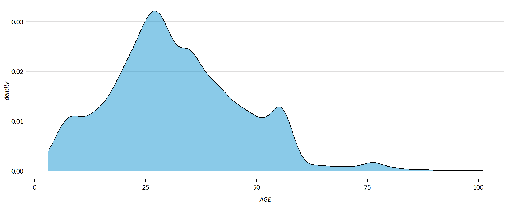
core2$AGE[ core2$AGE < 1 ] <- NA
if( nrow(core2) > 10000 )
{
core3 <- sample_n( core2, 10000 )
} else
{
core3 <- core2
}
jplot( core3$AGE, core3$st_debt_ratio,
xlab="Nonprofit Age",
ylab=variable.label ) 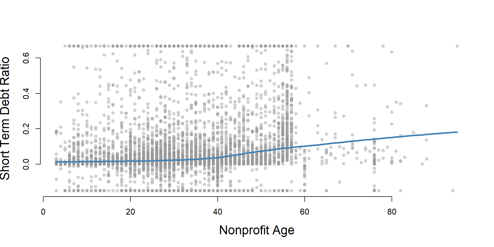
core2 %>%
filter( ! is.na(age.q) ) %>%
ggplot( aes(st_debt_ratio) ) +
geom_density( alpha = 0.5 ) +
labs( title="Nonprofit Age" ) +
xlab( variable.label ) +
ylab( "" ) +
facet_wrap( ~ age.q, nrow=3 ) +
theme_minimal( base_size = 22 ) +
theme( axis.title.y=element_blank(),
axis.text.y=element_blank(),
axis.ticks.y=element_blank() )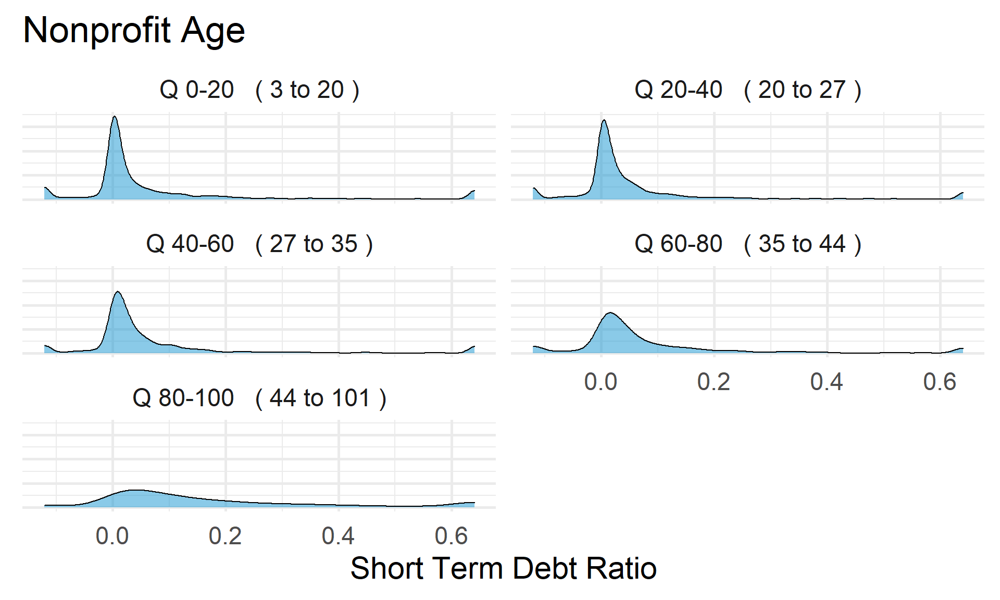
Short Term Debt Ratio by Land and Building Value
ggplot( core2, aes(x = lndbldgsequipend )) +
geom_density( alpha = 0.5 ) 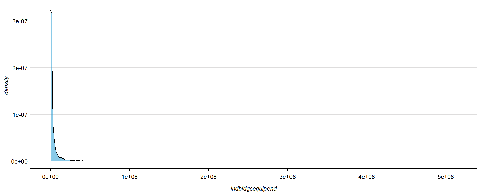
core2$lndbldgsequipend[ core2$lndbldgsequipend < 1 ] <- NA
if( nrow(core2) > 10000 )
{
core3 <- sample_n( core2, 10000 )
} else
{
core3 <- core2
jplot( log10(core3$lndbldgsequipend), core3$st_debt_ratio,
xlab="Land and Building Value (logged)",
ylab=variable.label,
xaxt="n", xlim=c(3,10) )
axis( side=1,
at=c(3,4,5,6,7,8,9,10),
labels=c("1k","10k","100k","1m","10m","100m","1b","10b") )
}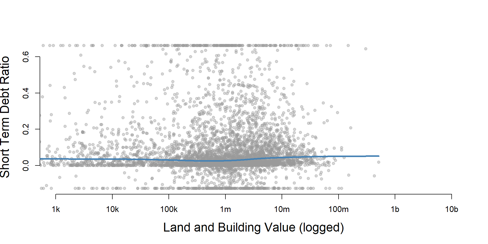
core2 %>%
filter( ! is.na(land.q) ) %>%
ggplot( aes(st_debt_ratio) ) +
geom_density( alpha = 0.5 ) +
labs( title="Land and Building Value" ) +
xlab( variable.label ) +
ylab( "" ) +
facet_wrap( ~ land.q, nrow=3 ) +
theme_minimal( base_size = 22 ) +
theme( axis.title.y=element_blank(),
axis.text.y=element_blank(),
axis.ticks.y=element_blank() )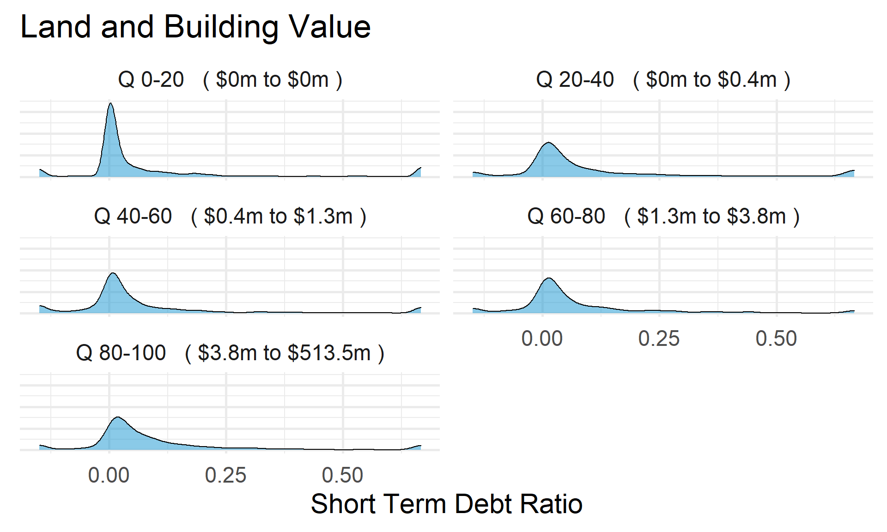
Save Metrics
core.st_debt_ratio <- select( core, ein, tax_pd, st_debt_ratio )
saveRDS( core.st_debt_ratio, "03-data-ratios/m-13-short-term-debt-ratio.rds" )
write.csv( core.st_debt_ratio, "03-data-ratios/m-13-short-term-debt-ratio.csv" )